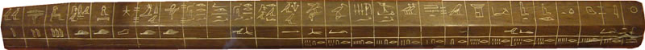
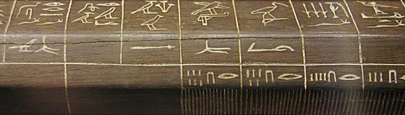
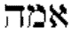

The cubit is the most widespread unit of measure from the ancient world. There are many different standards from far and wide. The Royal Egyptian Cubit is the most well-preserved and trustworthy of any very ancient cubit - older than a thousand years before the birth of Christ. What is surprising is how widespread the concept of a cubit actually is. This supports the idea that all the people groups of the world originated at Babel and were dispersed relatively suddenly - taking the cubit with them.
Goto Noah's Cubit article
|
Where the cubit began |
"Sumeria" Wikipedia "Maybe Egypt" Encyclopedia Britannica "No one knows" World Book Encyclopedia "Noah" Smith's Bible Encyclopedia |
|
Moses knew more than one cubit |
"After the cubit of man" The Revell Bible Dictionary |
|
Solomon knew more than one cubit |
"The length by cubits after the first measure" 2 Chron 3:3 International Bible Encyclopedia |
|
The earlier cubits were longer |
Easton's Revised Bible Dictionary , Jewish Encyclopedia Exactly the opposite view is stated in Unger's Bible Dictionary (1966) |
|
Derivation of Royal Egyptian Cubit |
W.M. Flinders Petrie. "The Pyramids and Temples of Gizeh" |
|
Other cubits |
Henry Morris. "The Genesis Record" Jack Proot. Richard Clark Table |
|
Hebrew cubit linked to Babylon |
|
|
The 'cubit of man' is the short (common) cubit |
A very old wooden rule - Royal Egyptian Cubit from the Louvre Museum in Frances, one of the finest collections of Egyptian antiquities in the world.
From photo courtesy Jon Bodsworth http://www.egyptarchive.co.uk

From photo courtesy Jon Bodsworth http://www.egyptarchive.co.uk 2007
Close up of the scale of the same wooden 'Cubit Rod' of Maya from the time of Tutankhamen. There are 28 'digits' on this 523mm rod, with lines at every fourth digit representing the 'palm'. The reasoning behind the use of seven palms (a prime number) has everyone guessing. The Babylonians had a 'Royal' cubit of similar length but completely different subdivisions scheme. The earliest Egyptian monuments used an identical cubit length which shows the Royal Egyptian Cubit remained accurate for thousands of years.

Used with permission. Photo courtesy Jon Bodsworth http://www.egyptarchive.co.uk
The numbers on the beveled face stand for the number of subdivisions of each digit - just visible as inscribed lines on the front face.
|
Egyptian numbering is simple, the "I" is one and the inverted U stands for 10. |
|||
|
Number of subdivisions of the digit |
16 | 15 | 14 |
A comprehensive list of cubits listed in order of length.
Type |
Approx Date |
Length(mm) |
Length(inches) |
Reference/s |
| Greek Short | - | 356 | 14 | 3 |
| Greek(Homeric) | - | 395 | 15.56 | 3 |
| Roman "Cubitum" | - | 444 | 17.48 | 3 |
| Hebrew "Common" | - | 445 | 17.5 | 1, 5 |
| Hebrew | - | 447 | 17.58 | 3 |
| Egyptian (short) | - | 447 | 17.6 | 1 |
| English | - | 457 | 17.68 | 3 |
| Greek "Prechys" | - | 462 | 18.19 | 2 |
| Olympic (Greek) | - | 463 | 18.23 | 3 |
| Greek | - | 474 | 18.68 | 3 |
| Sumerian | - | 495 | 19.5 | 3 |
| Babylon "Ammatu" | - | 495 | 19.5 | 2 |
| Babylon (old) "kush" | "2000 - 1600" BC | 500 (approx) | 19.69 | 7 |
| Nippur (Sumer) | 2000 BC | 517 | 20.35 | 2 |
| English (Druid) | - | 518 | 20.4 | 3 |
| Hebrew (Ezekiel 40:5) | - | 518 | 20.4 | 1 |
| Hebrew (Jerusalem) | 1 AD | 523 | 20.6 | 3 |
| Egyptian Royal "Original" | Khufu | 523.75 ± .25 | 20.62 ± .01 | 6 |
| Egyptian Royal "Average" | Khufu-Pepi | 524.00 ± .51 | 20.63 ± .02 | 6 |
| Egyptian Royal | - | 525 | 20.65 | 1 |
| Mexico Aztec | - | 526 | 20.7 | 3 |
| Babylonian "kus" | 1500 BC | 531 | 20.9 | 4 |
| China | ancient | 531 | 20.9 | 3 |
| Arabic (Black) | 800 AD | 541 | 21.28 | 3 |
| Assyrian | 700 BC | 549 | 21.6 | 3 |
| Biblical | - | 554 | 21.8 | 3 |
| Braunschweig | - | 571 | 22.48 | 2 |
| Persian (Royal) | - | 640 | 25.2 | 3 |
| Arabic (Hashimi) | - | 649 | 25.56 | 3 |
| Germany (Prussian) | - | 667 | 26.26 | 2 |
| Northern Europe | "3000" to 1800 BC | 676 | 26.6 | 3 |
1=Henry Morris "The Genesis Record"1, 2=Werner Gitt "The Most Amazing Ship in the History of the World", 3= www.footrule.com , 4=Encyclopedia Britannica, 5=Revell Bible Dictionary, 6=WM Flinders Petrie, 7= http://it.stlawu.edu/%7Edmelvill/mesomath/obmetrology.html
The Hebrew for cubit is ammah which means "mother of the arm."

520. Æammah (am-maw); prolonged from 517; properly a mother (i.e. unit) of measure, or the fore-arm (below the albow), i.e. a cubit;
517 Æem (ame) ; a primitive word; a mother (as the bond of the family); in a wide sense (both literally and figuratively --dam, mother, X parting. ...
cubit, also called COVID, unit of linear measure used by many ancient peoples. It may have originated in Egypt around 3000 BC; it thereafter became ubiquitous in the ancient world. The cubit, usually equal to about 18 inches (457 millimeters), was based on the length of the arm from the elbow to the extended finger tips. The Egyptian royal cubit (20.6 inches, or 524 millimeters) was subdivided into 28 digits, with 4 digits equaling a palm and 5 a hand. Twelve digits was a small span, 14 digits a large span, 16 digits a t'ser, and 20 digits a small cubit.
The basic Babylonian measure of length, the kus, was also called the cubit and measured about 20.9 inches (531 millimeters). The Greeks possessed an Olympic cubit equaling 24 fingers. The Romans and the ancient Hebrews also used the cubit.
Measurement: The earliest standard measurements appeared in the ancient Mediterranean cultures and were based on parts of the body, or on calculations of what man or beast could haul, or on the volume of containers or the area of fields in common use. The Egyptian cubit is generally recognized to have been the most widespread unit of linear measurement in the ancient world. It came into use around 3000 BC and was based on the length of the arm from the elbow to the extended finger tips. It was standardized by a royal master cubit of black granite, against which all cubit sticks in Egypt were regularly checked.
cubit.
1. The part of the arm from the elbow downward; the forearm.
2. An ancient measure of length derived from the forearm; varying at different times and places, but usually 18 to 22 inches.
[ad. L cubitum the elbow, the distance from the elbow to the fingertips,.. 1. the forearm or elbow 2. An ancient measure of length derived from the forearm; varying at different times and places, but usually 18-22 inches. It is the cubitus of the Romans = Greek (phcu), Hebrew ammah, all which words mean primarily the forearm. The Roman cubit was 17.4 inches; the Egyptian 20.64 inches.
Cubit, is a measure of length used by several early civilizations. It was based on the length of the forearm from the tip of the middle finger to the elbow. No one knows when this measure was established. The length of the arm, or cubit, was commonly used by many early peoples, including the Babylonians, Egyptians, and Israelites. The royal cubit of the ancient Egyptians was about 20.6 inches (52.3 centimeters) long. That of the ancient Romans was 17.5 inches (44.5 centimeters). The Israelites' cubit at the time of Solomon was 25.2 inches (64 centimeters). (Richard S. Davis)
Heb. 'ammah; i.e., "mother of the arm, " the fore-arm, is a word derived from the Latin cubitus, the lower arm. It is difficult to determine the exact length of this measure, from the uncertainty whether it included the entire length from the elbow to the tip of the longest finger, or only from the elbow to the root of the hand at the wrist. The probability is that the longer was the original cubit. The common computation as to the length of the cubit makes it 20 inches for the ordinary cubit, and 21 inches for the sacred one. This is the same as the Egyptian measurements. Top
The Babylonians had a royal cubit of about 19.8 inches; the Egyptians had a longer and shorter cubit of about 20.65 and 17.6 inches, respectively; and the Hebrews apparently had a cubit of 20.4 inches (Ezekiel 40:5) and a common cubit of about 17.5 inches. Another common cubit of antiquity was 24 inches. Most writers believe the Biblical cubit to be 18 inches. Top
cubit A measure of length used by ancient peoples that represents the distance from a man's elbow to the tip of his middle finger. While this distance would vary from person to person, a standard cubit was used in building. Working from an eighth-century B.C. inscription in the Siloam tunnel in Jerusalem, which gives its length as 1200 cubits, and computing the capacity of the gigantic bronze bowl outside Solomon's temple (1 Ki. 7:23-26), the length of the standard cubit works out to be about 17.5 inches (44.5 centimeters). The fact that the Bible speaks of a common cubit (Deut. 3:11) suggests that another cubit was also used. In Egypt there were two cubits, an ordinary measure and a "royal cubit", measuring about 20 inches (51 centimeters) long. If the royal cubit was intended in the description of Noah's ark, that vessel was over 500 feet (152.5 meters) long, but if the standard cubits is used, the ark was 430 feet (131 meters). Top
cubit - a measure of distance (the forearm), roughly 18 in (.5m). There are several cubits used in the OT, the cubit of a man or common cubit (Dt 3.11), the legal cubit or cubit of the sanctuary (Eze 40.5) plus others.
Blue Letter Bible. "Dictionary and Word Search for ''ammah (Strong's 0520) ' " . Blue Letter Bible. 1996-2002. 26 Apr 2004. <http://www.blueletterbible.org/cgi-bin/words.pl?word=0520&page=1>
(Latin cubitum, elbow, cubit; Heb, 'ammah; Greek pechus, the forearm), an important and constant measure among the Hebrews ... and other ancient nations. It was commonly reckoned as the length of the arm from the point of the elbow to the end of the middle finger, about 18 inches. (1) Egyptian cubit. This was 6 palms about 17.72 inches, but the royal Egyptian cubit was a palm longer (20.67 inches), evidence for this is found in measuring sticks recovered from tombs. (2) Babylonian cubit. Herodotus states that the "royal" exceeded the "moderate" cubit by three digits... Backh estimates the Babylonian cubit at 20.806 inches. (3) Hebrew cubit. The Hebrews like the Egyptians and Babylonians had two cubits, the common and the apparently older cubit (Deut 3:11; II Chron 3:3) and a cubit which was a handbreadth longer (Ezek 40:5; 43:13). The common Hebrew cubit was 17.72 inches and the long cubit was 20.67 inches, apparently the same as the Egyptian royal cubit. The R.V renders this passage "of six cubits to the joining".
TL: Note: The dimensions given in Deut 3:11 logically suggest Moses' "cubit of man" was the short series. Solomon's temple used the old cubit standard (II Chron 3:3) several centuries down the track. This does not really help to differentiate the ark cubit from later Hebrew cubits such as the Siloah tunnel measurement. If the cubit used by the international trader King Solomon is traceable then II Chron 3:3 could be a key verse. Was Solomon also an historian, using the ancient longer cubit for the temple construction? Since longer cubits tend to be used for building, one would expect Solomon's to be the larger and earlier version. All other references state the earlier cubits were the long ones. (Unger contradicts Eastons, Jewish Encyclopedia, International Standard Bible Encyclopedia and the Siloam tunnel measurement: 8th cent BC = new, and the long lengths of early Nippur and Royal Egyptian cubits)
The cubit was a Sumerian, later Egyptian measure. After the foot, it is the first recorded unit of length used by an ancient people. Around 1950 BC, the copper bar cubit of Nippur defines the Sumerian cubit as 51.72 cm. There were several cubits of different magnitudes that were used. In Egypt, the common cubit was the length of the forearm from the elbow to the tip of the middle finger (about 18 inches / 46 cm). It was divided into the span of the hand (one-half cubit), the palm or width of the hand (one sixth), and the digit or width of a finger (one twenty-fourth). Because one person's forearm tended to be a different length to the next person's, a standardised Royal Master Cubit, or Sacred Cubit, was cut in granite. This was 7 palms or 28 digits long, and was used in the construction of buildings and monuments (such as the pyramids) and in surveying. Top
"Inductive Metrology: the recovery of ancient measures from the monuments." Hargrove Saunders, London 1877.
W.M. Flinders Petrie. "The Pyramids and Temples of Gizeh" 1883.
(Determining the length of the Egyptian Royal Cubit)
p 178. The
measurements which have been detailed in the foregoing pages supply materials
for an accurate determination of the Egyptian cubit.
From such a mass of exact measures, not only may the earliest value of the cubit
be ascertained, but also the extent of its variations as employed by different
architects.*
* On the facade of one of the tombs at Beni Hassan there is a scratch left by the workman at every cubit length. The cubit there is a long variety, of 20.7 to 20.8.
There is no need to
repeat here all the details of each case already given, nor to enter on the
principles of the determination of units of measure from ancient remains, which
I have fully described in "Inductive Metrology."
For the value of the usual cubit, undoubtedly the most important source is the
King's Chamber in the Great Pyramid ; that is the most accurately wrought, the
best preserved, and the most exactly measured, of all the data that are known.
The cubit in the Great Pyramid varies thus :—
|
By the base of
King's Chamber, corrected for opening of joints |
20.632 ± .004 |
The passage widths are so short and variable that little value can be placed on them, especially as they depend on the builder's and not on the mason's work. The lengths of the passages are very accurate data, but being only single measures, are of less importance than are chambers, in which a length is often repeated in the working. The chamber dimensions are rather variable, particularly in the subterranean and Antechamber, and none of the above data are equal in quality to the King's Chamber dimensions. If a strictly weighted p 179 mean be taken it yields 20.620 ± .004; but taking the King's Chamber alone, as being the best datum by far, it nevertheless contracts upwards, so that it is hardly justifiable to adopt a larger result than 20.620 ± .005.
Arranging the examples chronologically, the cubit used was as follows :—
|
Great Pyramid at Gizeh, |
Khufu |
20.620 ± .005 |
141. The values of the cubit and digit, found in use in the cases mentioned in this chapter, agree remarkably closely with what has been already worked out. For the cubit I had deduced (Inductive Metrology, p.50) from a quantity' of material, good, bad, and indifferent, 20.64 ± .02 as the best result that I could get; about a dozen of the actual cubit rods that are known yield 20.65 ± .01; and now from the earliest monuments we find that the cubit first used is 20.62, and the mean value from the seven buildings named is 20.63 ± .02. Here, then, by the earliest monument that is known to give the cubit, by the mean of the cubits in seven early monuments, by the mean of 28 examples of various dates and qualities, and by the mean of a dozen cubit rods, the result is always within 1/50 inch of 20.63. On the whole we may take 20.62 ± .0I as the original value, and reckon that it slightly increased on an average by repeated copyings in course of time. Top
The Egyptians made a bigger contribution to general knowledge in devising systems of measurement, which appealed to their empirical spirit. They were very observant people. They were the first to note the fact that all the parts of the body are (on average) constant in any individual in terms of their mutual relationships, irrespective of the individual's size relative to others. it was this observation of an invariable canon which lay at the heart of their extraordinary grasp of physical form in their painting and sculpture. But it also led them, very likely at an earlier stage in predynastic times, to an anthropometric system of measurement.
The basic unit was the arm length from elbow to thumb-tip, the cubit. This was divided into 6 palms or handbreadths (measured on the back across the knuckles), each made up of 4 fingers. The thumb was 1-1/3 fingers, which later became standardised as the Roman uncia or inch.
A hand of 4 fingers plus thumb was 5-1/3 fingers or 1-1/3 basic handbreadths. The distance from elbow to wrist was 4 handbreadths or as it was termed in Egypt the "two-thirds" (of a cubit); in other Mediterranean systems it was called the pous, or foot. The ordinary or "short" cubit (6 palms or 24 fingers) was supplemented by the "royal cubit", equal to 7 palms or 28 fingers - and, in our terms, nearly 21 ins. Top
http://users.aol.com/JackProot/met/index.html Jack Proot
Egypt: The basic unit seems to have been the royal cubit or "meh" estimated at 524 mm. `There was indeed another "ordinary" cubit of 450 mm. (20.62 " & 17.67 "). 24 digits = 6 palms = 1 ordinary or small cubit (= 450 mm). 28 digits = 7 palms = 1 royal cubit or "meh" ( 524 mm).
Mesopotamia: Also uses the cubit (some think it originated in Sumer). Its measure varies from 522 to
532 mm.
There is an exception in Assyria : the cubit is thought to have 640 mm.
In Persia we had the cubit or "arasni" (520 to 543 mm)
Greece: Generally a foot of 309 mm (12.16 ") subdivided into 16 digits and equal to 2/3 of a (small) cubit - take or leave 4 %. There was also an older foot of 316 mm equal to 3/5 of a big cubit - 527 mm. 24 digits = 1 "pechya" or small cubit. Top
http://members.aol.com/AVBibleTAB/flood/f12.htm Richard Clark
The "1992 World Almanac and Book of Facts" gives a Roman Cubit of 17.5 inches, a Greek Cubit of 18.3 inches, and a so-called "Biblical Cubit" of 21.8 inches.
Collier's Encylopedia (Weights and Measures, pages 394,395) gives an Arabian(black) cubit of 21.3 inches, an Arabian(hashimi) cubit of 25.6 inches, an Assyrian cubit of 21.6 inches, an ancient Egyptian cubit of 20.6 inches, an ancient Israeli cubit of 17.6 inches, an ancient Grecian cubit of 18.3 inches, and an ancient Roman cubit of 17.5 inches; The last two agree with the 1992 World Almanac ones.
Webster's unabridged dictionary gives a Roman cubit of 17.4 inches, and an Egyptian cubit of 20.64 which is about the same as Collier's. And, (of course,) Webster's ENGLISH dictionary for english-speaking people in the U.S.A., gives a modern ENGLISH CUBIT of 18 inches.
Emil G.Hirsch,Ph.D.,LL.D., Professor of Rabbinical Literature and Philosophy, University of Chicago; Chicago, Ill.
Immanuel Benzinger, Ph.D., Professor of Old Testament Exegesis, University of Berlin, Germany; Jerusalem, Palestine.
Joseph Jacobs, B.A., Formerly President of the Jewish Historical Society of England;
Jacob Zallel Lauterbach, Ph.D.
Biblical Data:
I. Measures of Length:
The Cubit.
http://www.searchgodsword.org/enc/isb/view.cgi?action=Lookup&word=cubit (Public Domain. James Orr, M.A., D.D. General Editor. "Entry for 'CUBIT'". "International Standard Bible Encyclopedia". 1915)
Cubit ku'-bit ('ammah; pechus)
The standard for measures of length among the Hebrews. They derived it from the Babylonians, but a similar measure was used in Egypt with which they must have been familiar. The length of the cubit is variously estimated, since there seems to have been a double standard in both countries, and because we have no undisputed example of the cubit remaining to the present time. The original cubit was the length of the forearm, from the elbow to the end of the middle finger, as is implied from the derivation of the word in Hebrew and in Latin (cubitum). It seems to be referred to also in Deuteronomy 3:11: "after the cubit of a man." But this was too indefinite for a scientific standard, and the Babylonians early adopted a more accurate method of measurement which passed to the nations of the West. They had a double standard, the so-called royal cubit and the ordinary one. From the remains of buildings in Assyria and Babylonia, the former is made out to be about 20,6 inches, and a cubit of similar length was used in Egypt and must have been known to the Hebrews. This was probably the cubit mentioned by Ezekiel 40:5 and perhaps that of Solomon's temple, "cubits after the first measure" (2 Chronicles 3:3), i.e. the ancient cubit. The ordinary cubit of commerce was shorter, and has been variously estimated at between 16 and 18 or more inches, but the evidence of the Siloam inscription and of the tombs in Palestine seems to indicate 17,6 inches as the average length. See LINEAR MEASURES. This was the cubit of six palms, while the longer one was of seven (Ezekiel 40:5). The cubit mentioned in Judges 3:16 is from a different word in Hebrew (gomedh) and was probably shorter, for Ehud girded it on his thigh under his clothing.
H. Porter
Linear Measures:
The system of weights and measures in use among the Hebrews was derived from Babylonia and Egypt, especially from the former. The influence of these countries upon Palestine has long been recognized, but archaeological investigations in recent years have shown that the civilization of Babylonia impressed itself upon Syria and Palestine more profoundly in early times than did that of Egypt. The evidence of this has been most clearly shown by the discovery of the Tell el-Amarna Letters, which reveal the fact that the official correspondence between the Egyptian kings and their vassals in these lands was carried on in the language of Babylonia long after its political influence had been supplanted by that of Egypt. It is natural, then, that we should look to Babylonia for the origin of such important elements of civilization as a system of weights and measures.
It was quite natural that men should have found a standard for linear measures in the parts of the human body, and we find the cubit, originally the length of the forearm, taken as the standard, and the span, the palm and the digit, or finger-breadth, associated with it in linear measurement. They do not seem to have employed the foot, though it is represented in the two-thirds of the cubit, which was used by the Babylonians in the manufacture of building-brick.
This system, though adequate enough for man in the earliest times, was not so for an advanced stage of civilization, such as the Babylonians reached before the days of Abraham, and we find that they had introduced a far more accurate and scientific system (see CUBIT). They seem to have employed, however, two cubits, of different lengths, one for commercial purposes and one for building. We have no undoubted examples of either, but judging by the dimensions of their square building-bricks, which are regarded as being two-thirds of a cubit on a side, we judge the latter to have been of about 19 or 20 inches. Now we learn from investigations in Egypt that a similar cubit was employed there, being of from 20.6 to 20.77 inches, and it can hardly be doubted that the Hebrews were familiar with this cubit, but that in more common use was certainly shorter. We have no certain means of determining the length of the ordinary cubit among the Hebrews, but there are two ways by which we may approximate its value. The Siloam Inscription states that the tunnel in which it was found was 1,200 cubits long. The actual length has been found to be about 1,707 feet, which would give a cubit of about 17.1 in. (see PEFS, 1902, 179). Of course the given length may be a round number, but it gives a close approximation.
Again, the Mishna states that the height of a man is 4 cubits, which we may thus regard as the average stature of a Jew in former times. By reference to Jewish tombs we find that they were of a length to give a cubit of something over 17 inches, supposing the stature to be as above, which approximates very closely to the cubit of the Siloam tunnel. The consensus of opinion at the present day inclines toward a cubit of 17.6 inches for commercial purposes and one of about 20 inches for building. This custom of having two standards is illustrated by the practice in Syria today, where the builder's measure, or dra', is about 2 inches longer than the commercial.
http://devel.searchgodsword.org/dic/sbd/view.cgi?number=T4455 (Public Domain, Dr William Smith, 1901)
MEASURES OF LENGTH. --In the Hebrew, as in every other system, these measures are of two classes: length, in the ordinary sense, for objects whose size we wish to determine, and distance, or itinerary measures, and the two are connected by some definite relation, more or less simple, between their units. The measures of the former class have been universally derived, in the first instance, from the parts of the human body; but it is remarkable that, in the Hebrew system, the only part used for this purpose is the hand and fore-arm, to the exclusion of the foot, which was the chief unit of the western nations. Hence arises the difficulty of determining the ratio of the foot to the CUBIT, (The Hebrew word for the cubit (ammah ) appears to have been of Egyptian origin, as some of the measures of capacity (the hin and ephah ) certainly were.) which appears as the chief Oriental unit from the very building of Noah’s ark.
1. Richard J. Gillings. "Mathematics in the Time of the Pharaohs" MIT Press, Cambridge, Massachusetts, 1972
2. Petrie, W. M. Flinders. The Pyramids and Temples of Gizeh. 1st ed. London: Field and Tuer; New York: Scribner & Welford, 1883. Republished online at The Pyramids and Temples of Gizeh Online. Ed. Ronald Birdsall, 2003. Rev. April 15, 2007 <http://www.ronaldbirdsall.com/gizeh>
Flinders Petrie, "Inductive Metrology", Saunders, 1877.
A.E.Berriman, "Historical Metrology", Dent, 1953. H.M.S.O., 1967.
F.G.Skinner, "Weights and Measures. Their ancient origins and development in Great Britain up to 1855", HMSO 1967
R.E.Zupko, "Dictionary of English Weights and Measures", University of Wisconsin Press, 1968.
Powell, M. A. (1995). 'Metrology and mathematics in ancient Mesopotamia', in Civilizations of the ancient Near East III (ed. J. M. Sasson), New York: Scribners, 1941-1958.